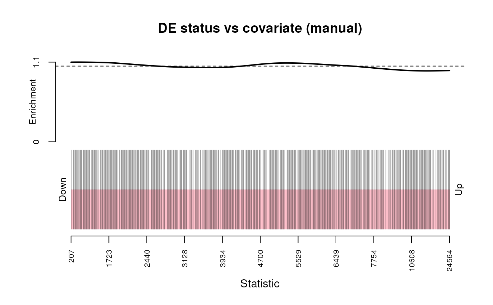
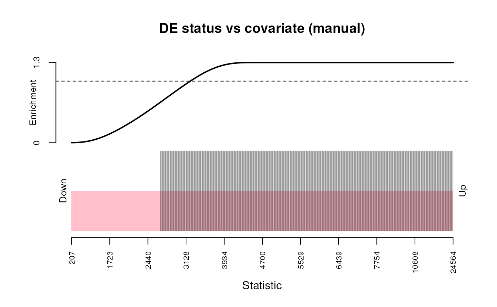

R/do.ora.R
ora.RdThis function wraps limma::kegga() to perform biased overrepresntation
analysis over gene set collection stored in a GeneSetDb (gsd) object. Its
easiest to use this function when the biases and selection criteria are
stored as columns of the input data.frame dat.
ora(
x,
gsd,
selected = "significant",
groups = NULL,
feature.bias = NULL,
universe = NULL,
restrict.universe = FALSE,
plot.bias = FALSE,
...,
as.dt = FALSE
)
plot_ora_bias(x, selected, feature.bias, ...)A data.frame with feature-level statistics. Minimally, this should
have a "feature_id" (character) column, but read on ...
The GeneSetDb
Either the name of a logical column in dat used to subset
out the features to run the enrichement over, or a character vector of
"feature_id"s that are selected from dat[["feature_id"]].
Encodes groups of features that we can use to test selected
features individual, as well as "all" together. This can be specified by:
(1) specifying a name of a column in dat to split the enriched features
into subgroups. (2) A named list of features to intersect with selected.
By default this is NULL, so we only run enrichment over
all elements in selected. See examples for details.
If NULL (default), no bias is used in enrichment
analysis. Otherwise, can be the name of a column in dat to extract
a numeric bias vector (gene length, GC content, average expression, etc.)
or a named (using featureIds) numeric vector of the same. The BiasedUrn
CRAN package is required when this is not NULL.
Defaults to all elements in dat[["feature_id"]].
See same parameter in limma::kegga()
See plot parameter in limma::kegga(). You can generate
this plot without running ora using the plot_ora_bias(),
like so:
plot_ora_bias(dat, selected = selected, groups = groups, feature.bias = feature.bias)
parameters passed to conform()
If FALSE (default), the data.frame like thing that
this funciton returns will be set to a data.frame. Set this to TRUE
to keep this object as a data.table
A data.frame of pathway enrichment. The last N colums are enrichment
statistics per pathway, grouped by the groups parameter. P.all are the
stats for all selected features, and the remaingin P.* columns are for
the features specifed by groups.
In principle, this test does what goseq does, however I found that
sometimes calling goseq would throw errors within goseq::nullp() when
calling makesplines. I stumbled onto this implementation when googling
for these errors and landing here:
https://support.bioconductor.org/p/65789/#65914
The meat and potatoes of this function's code was extracted from
limma::kegga(), written by Gordon Smyth and Yifang Hu.
Note that the BiasedUrn CRAN package needs to be installed to support biased enrichment testing
plot_ora_bias(): plots the bias of coviarate to DE / selected status. Code
taken from limma::kegga()
Young, M. D., Wakefield, M. J., Smyth, G. K., Oshlack, A. (2010). Gene ontology analysis for RNA-seq: accounting for selection bias. Genome Biology 11, R14. http://genomebiology.com/2010/11/2/R14
dgestats <- exampleDgeResult()
gdb <- randomGeneSetDb(dgestats)
# Run enrichmnent without accounting for any bias
nobias <- ora(dgestats, gdb, selected = "selected", groups = "direction",
feature.bias = NULL)
# Run enrichment and account for gene length
lbias <- ora(dgestats, gdb, selected = "selected",
feature.bias = "effective_length")
# plot length bias with DGE status
plot_ora_bias(dgestats, "selected", "effective_length")

# induce length bias and see what is the what ...............................
biased <- dgestats[order(dgestats$pval),]
biased$effective_length <- sort(biased$effective_length, decreasing = TRUE)
plot_ora_bias(biased, "selected", "effective_length")

etest <- ora(biased, gdb, selected = "selected",
groups = "direction",
feature.bias = "effective_length")